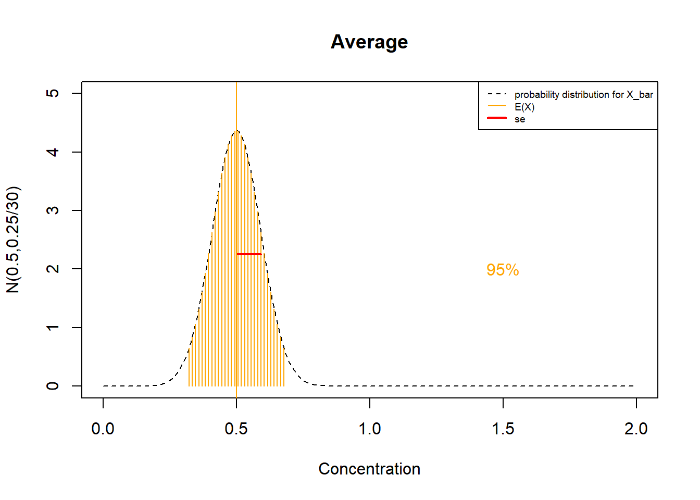

Chapter 11 Teorema central del límite
11.1 Objetivo
En este capítulo introduciremos el margen de errores al estimar la media de la distribución de la población por el promedio.
Discutiremos cómo el Teorema central del límite nos permitirá calcular el margen de error para cualquier tipo de distribución si la muestra es grande.
También introducirá la estadística t, para calcular el margen de error cuando la muestra es pequeña pero la distribución de la población es normal.
11.2 Margen de error
Al decidir si el error de estimación de \(\mu\) por la media muestral \(\bar{x}\) es grande o no, generalmente lo comparamos con una tolerancia predefinida.
El margen de error a nivel de \(5\%\) es la distancia \(m\) de \(\bar{X}\) de \(\mu\) que captura \(95\%\) de las estimaciones:
\[P(-m \leq \bar{X}-\mu \leq m)=P(\mu-m \leq \bar{X} \leq\mu + m)=0.95\]
Esto significa que \(95\%\) de los posibles resultados de \(\bar{X}\) están a una distancia \(m\) de \(\mu\)
11.3 Ejemplo (cables)
Si tomamos una muestra de cables de \(8\) de una población de cables cuya carga de ruptura sigue una distribución normal con parámetros conocidos \(\mu=13\) y \(\sigma^2=0.35^2\),
\[X \rightarrow N(\mu=13, \sigma^2=0.35^2)\]
¿Cuál es el margen de error cuando estimamos \(\mu\) por \(\bar{x}\)?
Calculando el maging de error de una variable normal
Queremos saber el número \(m\) en la ecuación
\[P(\mu-m \leq \bar{X} \leq\mu + m)=0.95\]
Para resolver esta ecuación necesitamos dos pasos. Primero, necesitamos saber la distribución de \(\bar{X}\).
- Cuando \(X\) es normal \(X \rightarrow N(\mu, \sigma^2)\) entonces
\[\bar{X} \rightarrow N(\mu, \frac{\sigma^2}{n})\] Entonces necesitamos estandarizar \(\bar{X}\). Recuerda que para estandarizar una variable normal restamos su media y la dividimos por su desviación estándar.
\[Z=\frac{\bar{X}-E(\bar{X})}{\sqrt{V(\bar{X})}} =\frac{\bar{X}-\mu}{ \frac{\sigma}{\sqrt{n}}} \rightarrow N(0,1)\]

- Sustituyendo la media de \(\bar{X}\) y su desviación estándar en la ecuación del margen de error, tenemos:
\(P(\mu-m \leq \bar{X} \leq\mu + m)=P(-\frac{m}{\sigma/\sqrt{n}} \leq \frac{\bar{X} -\mu}{\frac{\sigma}{\sqrt{n}}}\leq\frac{m}{\sigma/\sqrt{n}})\) \[=P(-\frac{m}{\sigma/\sqrt{n}} \leq Z \leq\frac{m}{\sigma/\sqrt{n}})=0.95\]
Compáralo con el gráfico anterior: \(\frac{m}{\sigma/\sqrt{n}}\) es la distancia alrededor de \(0\) que captura \(95\%\) de la variable normal estándar de distribución. La distancia deja una probabilidad de \(2.5\%\) en cada extremo de la distribución. Para la parte superior de la cola, esto es
\[\frac{m}{\sigma/\sqrt{n}}=\phi^{-1}(0.975)=1.96\]
donde \(\phi^{-1}\) es la inversa de la distribución normal estándar (qnorm(0.975)). Por lo tanto
\[m=1.96 \frac{\sigma}{\sqrt{n}}\] Ejemplo (cables)
La media muestral \(\bar{X}\) de una muestra de cables de \(8\) sigue una distribución normal con:
- media \(E(\bar{X})=\mu\)
y
- error estándar \(se=\sqrt{V(\bar{X})}=\frac{\sigma}{\sqrt{n}}=\frac{0.35}{\sqrt{8}}\)
Entonces el margen de error en \(5\%\) es:
\[m=1.96\frac{0.35}{\sqrt{8}}=0.24\]
Podemos esperar que \(95\%\) de los promedios (\(\bar{x}\)) para la carga de rotura de los cables de \(8\) caigan entre \((13-0.24, 13+0.24)=(12.76, 13.24)\)
11.4 Teorema central del límite
Pudimos resolver el margen de error porque asumimos que esa variable \(X\) era normal. ¿Qué pasa si \(X\) sigue cualquier otra distribución de probabilidad?
Teorema: Para cualquier variable aleatoria \(X\) con cualquier tipo de distribución
\[X \rightarrow f(x; \theta)\] la estadística estandarizada
\[Z=\frac{\bar{X}-E(\bar{X})}{\sqrt{V(\bar{X})}}\]
se aproxima a una distribución estándar
\[Z \rightarrow_d N(0,1)\] cuando \(n\rightarrow \infty\)
Consecuencia: Podemos calcular las probabilidades de \(\bar{X}\) si \(n\) es grande, usando la distribución normal:
\[\bar{X} \sim_{aprox} N(\mu, \frac{\sigma^2}{n})\]
Ejemplo (fármaco en concentración sanguínea):
Considera un experimento en el que queremos medir la concentración en sangre de un fármaco después de \(10\) horas de administración en \(30\) pacientes.
Si sabemos que los niveles siguen una distribución exponencial \[X \rightarrow exp(\lambda=2)\]

La media y la varianza son:
- \(\mu=\frac{1}{\lambda}=0.5\)
- \(\sigma^2=\frac{1}{\lambda^2}=0.25\)
Por lo tanto, la media y el error estándar de \(\bar{X}\) son:
- \(E(\bar{X})=\frac{1}{\lambda}=0.5\)
- \(se=\sqrt{\frac{\sigma^2}{n}}=\sqrt{\frac{1}{n\lambda^2}}=0.091\)
Como \(n \geq 30\)
\[Z=\frac{\bar{X}-\lambda}{\sqrt{\frac{1}{n\lambda^2}}}\]
es una variable normal estándar y: \(\bar{X} \sim_{aprox} N(\lambda, \frac{1}{n\lambda^2})\)
El margen de error al nivel de \(5\%\) se puede calcular de nuevo con la distribución estándar
\[m=\phi^{-1}(0.75) \frac{\sigma}{\sqrt{n}}=1.96\frac{0.25}{\sqrt{30}}=0.1789227\]
Podemos esperar que \(95%\) de los promedios de muestras de pacientes de \(30\) caigan entre \((0.5-0.178, 0.5+0.178)= (0.322, 0.678)\)
11.5 Suma muestral y CLT
Para cualquier variable aleatoria \(X\) con distribución desconocida (cualquier tipo de)
\[X \rightarrow f(x; \theta)\]
la estadística estandarizada
\[Z=\frac{\bar{X}-\mu}{\frac{\sigma}{\sqrt{n}}}=\frac{n\bar{X}-n\mu}{\sqrt{n}\sigma}\]
se aproxima a una distribución estándar
\[Z \rightarrow_d N(0,1)\] cuando \(n\rightarrow \infty\)
Consecuencia: Podemos calcular probabilidades para la suma muestral \(Y=n\bar{X}\) si \(n\) es grande, usando la distribución normal:
\[\bar{Y} \sim_{aprox} N(n\mu, n\sigma)\]
11.6 Preguntas
1) La importancia del Teorema central del límite es que se aplica a la estandarización de
\(\qquad\)a: Una variable aleatoria; \(\qquad\)b: La media muestral de una variable normal; \(\qquad\)c: La media muestral de una variable aleatoria; \(\qquad\)d: Una variable normal;
2) Cuando \(n>30\), la media muestral de una variable aleatoria (\(\frac{1}{n}\sum_i Xi\)) y su suma muestral (\(\sum_i Xi\)) se pueden aproximar a
\(\qquad\)a: \(N(\frac{\mu}{n}, \frac{\sigma^2}{n})\) y \(N(\mu, \sigma^2)\); \(\qquad\)b: \(N(\mu, n\sigma^2)\) y \(N(\mu, \frac{\sigma^2}{n})\); \(\qquad\)c: \(N(\mu, \frac{\sigma^2}{n})\) y \(N(\mu, \frac{\sigma^2}{n})\); \(\qquad\)d: \(N(\mu, \frac{\sigma^2}{n})\) y \(N(n\mu, n\sigma^2)\)
3) Para una variable normal estándar, si ponemos el número \(z_{0.025}\) en la definición del margen de error \(m=z_{0.025} \frac{\sigma}{\sqrt{n}}\), entonces se referirá a
\(\qquad\)a: El primer cuartil; \(\qquad\)b: El número en el que la distribución ha acumulado \(0.975\) de probabilidad; \(\qquad\)c: El número en el que la distribución ha acumulado una probabilidad de \(0.025\); \(\qquad\)d: El tercer cuartil;
4) La probabilidad de que la suma muestral de \(50\) observaciones esté una distancia de un error estandar (\(se=\frac{\sigma}{\sqrt{n}}\)) de de la media poblacional \(\mu\) es:
\(\qquad\)a:2*(1-pnorm(1))= 0.3173105; \(\qquad\)c:2*(1-pnorm(2))=0.04550026;
\(\qquad\)b:-1+2*pnorm(1)=0.6826895;
\(\qquad\)d:-1+2*pnorm(2)=0.9544997
5) Una resonancia magnética del hipocampo del cerebro tiene \(100\) píxeles. Esperamos que \(90\%\) de los píxeles sean blancos (tejido cerebral). Según el Teorema central del límite , ¿cuál es la probabilidad de que el escaneo de un paciente tenga como máximo \(85\%\) de píxeles blancos?
\(\qquad\)a:pnorm(0.9, 0.85, sqrt(0.85*0.15)/10); \(\qquad\)b:dnorm(0.85, 0.9,
sqrt(0.9*0.1)/10); \(\qquad\)c:pnorm(0.85, 0.9, sqrt(0.9*0.1)/10); \(\qquad\)d:dnorm(0.9, 0.85, sqrt(0.85*0.15)/10)
11.7 Ejercicios
11.7.0.1 Ejercicio 1
Se necesita un componente electrónico para el correcto funcionamiento de un telescopio. Necesita ser reemplazado inmediatamente cuando se desgasta.
La vida media del componente (\(\mu\)) es de \(100\) horas y su desviación estándar \(\sigma\) es de \(30\) horas.
¿Cuál es la probabilidad de que el promedio de la vida media de \(50\) componentes esté dentro de \(1\) hora de la vida media de un solo componente? (R:0.1863)
¿Cuántos componentes necesitamos para que el telescopio esté operativo \(2750\) horas consecutivas con al menos \(0.95\) de probabilidad? (R:31)
11.7.0.2 Ejercicio 2
La probabilidad de que se encuentre una mutación particular en la población es de \(0.4\). Si testamos \(2000\) personas por la mutación:
- ¿Cuál es la probabilidad de que el número total de personas con la mutación esté entre \(791\) y \(809\)? (R:0.31)
sugerencia: usa el CLT con una muestra de ensayos de Bernoulli de \(2000\). Esto se conoce como la aproximación normal de la distribución binomial que es buena cuando \(p\) y \(1-p\) son ambis mayor que \(5\).
11.7.0.3 Ejercicio 3
Una máquina automática llena tubos de ensayo con muestras biológicas con una media de \(\mu=130\)mg y una desviación estándar de \(\sigma=5\)mg.
para una muestra aleatoria de tamaño \(50\). ¿Cuál es la probabilidad de que la media muestral (promedio) esté entre \(128\) y \(132\)gr? (R:0.995)
¿Cuál debería ser el tamaño de la muestra (\(n\)) tal que la media muestral \(\bar{X}\) sea superior a \(131\)gr con una probabilidad menor o igual a \(0.025\)?(R:97)
11.7.0.4 Ejercicio 4
En el Caribe, parece haber un promedio de huracanes de \(6\) por año. Teniendo en cuenta que la formación de huracanes es un proceso de Poisson, los meteorólogos planean estimar el tiempo medio entre la formación de dos huracanes. Planean recolectar una muestra de tamaño \(36\) para los tiempos entre dos huracanes.
¿Cuál es la probabilidad de que su promedio muestral esté entre \(45\) y \(60\) días? (R:0.39)
¿Cuál debe ser el tamaño de la muestra para que tengan una probabilidad de \(0.025\) de que la media muestral sea mayor a \(70\) días? (R:169)